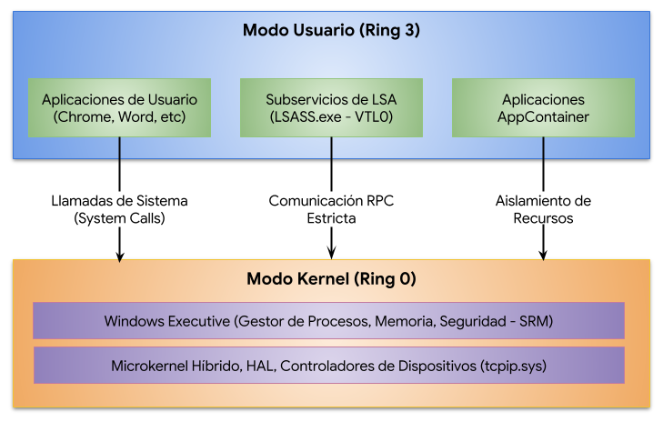

Arquitectura de Seguridad del Sistema Operativo Windows y Control de Acceso
La seguridad y estabilidad operativa del sistema operativo Windows NT residen en un diseño arquitectónico de capas segregadas, fundamentado en la separación rígida de los modos de ejecución del procesador (Wikipedia, 2026). Este modelo delimita las operaciones de los hilos de ejecución en dos modos fundamentales: el Modo Usuario (User Mode) y el Modo Kernel (Kernel Mode) (Wikipedia, 2026; Krishnaa, 2026).
Modo Usuario vs. Modo Kernel
En la arquitectura de Windows NT, el Modo Usuario representa un nivel de ejecución restrictivo que opera bajo el concepto de Anillo 3 (Ring 3)...

El Modelo de Permisos y Control de Acceso en Windows
El control de acceso en Windows se implementa mediante un modelo basado en objetos securizables...